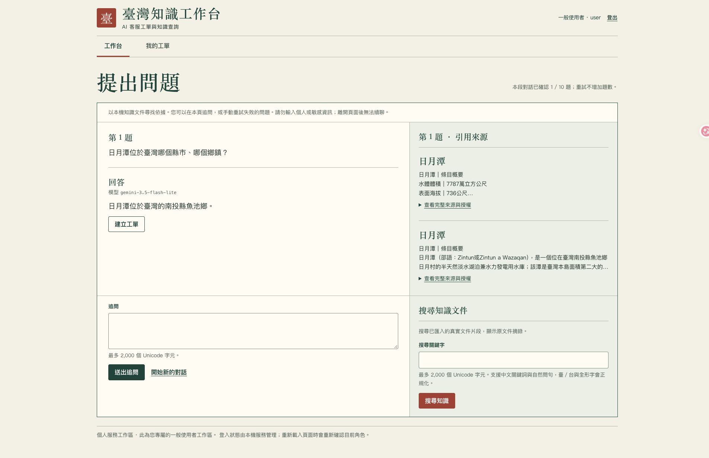

工作經歷
-
停車場監控與計費
年近億筆停車事件，獨立開發 6–7 種計費模式。
-
門禁、卡務與排班
三套系統正式上線，門禁與卡務共用 .NET 平台。
-
Laravel 舊系統升級
分階段將 Laravel 從 5.1 升至 7.2，逐項驗證既有功能。
六個作品
從 GitHub 下載，依 README 在本機操作。
-
GitHub
請購簽核 C# / .NET / React

-
GitHub
門市訂單 PHP / Laravel / Vue

-
GitHub
多品牌會員 Node.js / NestJS / React

-
GitHub
IoT 設備監控 Go / Gin / Vue

-
GitHub
餐飲門市對帳 Ruby on Rails / Vue

-
GitHub
AI 客服工單 Python / FastAPI / Vue

AI 客服完整問答需 Gemini API Key。
開發方式
-
釐清需求
推演流程與例外情境，用 AI 比較可能的做法。
-
確認規格
與 PM 或業務確認規則，寫入規格並拆成開發任務。
-
實作與驗證
依規格開發、測試與審查，核對交付結果。